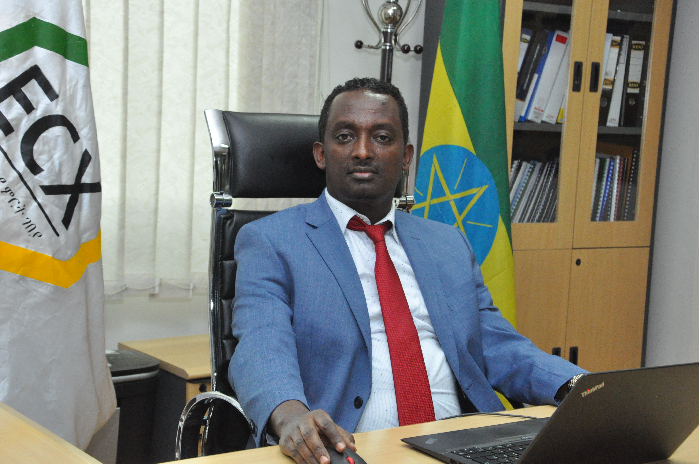

<div class="container">
    <div class="row">
        <div class="col-md-3">
            <app-about-us-nav></app-about-us-nav>
        </div>
        <div class="col-md-9">
            <div class="row">
                <h1> Governance</h1>
            </div>
            <div class="row">
                
            </div>
            <div class="row">
                <p> Ethiopia Commodity Exchange is overseen by Board of Directors, which consists of 11 members, out of which six are appointed by the Ministry of Trade, including the chairperson and five are elected by the members of the Exchange. In the last ten years, different Board of Directors, chaired by Ato Addisu Legesse, Ato Mekonen Manyazewal, Ato Tefera Deribew and Ato Sani Redi respectively, led ECX. At this time, a Board of Directors chaired by Dr Yinager Dese is in a position. 
                    During the establishment of Ethiopia Commodity Exchange, Dr. Eleni Gebremedhin, the first Chief Executive Officer, played a pivotal role in laying the foundation of the modern trading system. Led by Dr. Eleni, the first senior management organized ECX by manpower, knowledge, material and technology.
                    They exerted their utmost effort to mainstream the modern trading system as a new concept, to establish international standard working environment, to kick off the trade, to register members, to introduce more commodities to the trade and to create technological capacity. Their effort enabled the Exchange to be the pride of the country, centre of excellence for African countries and internationally recognized.
                    As it is a new institution for our country, ECX was established in 2008 with the budget allocated by the government and monetary support of international organizations. This contribution allowed the Exchange to run its business by its income after five years.
                    While the end of the term of the founding senior management members, they replaced competent staffs by their merits and properly handed over their responsibilities. After Dr. Eleni Gebremedhin, Ato Anteneh Asefa, Ato Shimelis Habtewold and Ato Ermias Eshetu led the Exchange as CEO respectively.
                    The remarkable change in the organizational structure of ECX, in the last decade, was the spin-off of the warehouse operation from the Exchange in 2015 and merging again in 2017. According to the regulation of the Council of Ministers 331/2014, Ethiopian Agricultural Commodities Warehousing Service Enterprise (EACWSE) has been established. The purpose of the enterprise encompasses constructing and managing modern and technology-based commodity warehouses; receiving, grading, weighing and depositing incoming commodities, issuing warehouse receipt and delivering commodity; setting up and implementing modern, efficient, centralized and automated warehouse receipt system and the like.
                    Based on the experience of other countries, it was planned to handle the warehouse service through private firms, companies and enterprises, but there was no well-organized local capacity. To enable ECX to focus on trading only and to create an enabling environment to establish modern and efficient warehouse system, EACWSE was formed as a government entity business firm.
                    Since then ECX and EACWSE closely worked in commodity receiving – trading – clearing settlement process. Pawe and Dansha branches have been established by the enterprise and efforts were exerted to enhance the accessibility of the warehouse service.
                    One of the changes in the new coffee trading system in 2017 was the dissolution of EACWSE and merging to ECX enabling efficient and effective trading. As of July 2017, based on the regulation of the Council of Ministers 404/2017 dated May 17, 2017 ECX and EACWSE are merged.     
                    When the coffee trading system was introduced, the reform activities showed the strong organizational capacity of the Exchange. Designing new trading system, capacitating warehouses, establishing an electronic system for the process from commodity receiving till delivery, empowering members and traders in new trading system have been implemented. 
                    Now, Ethiopia Commodity Exchange is rendering a decade-long modern trading service at the head office and 22 branches. At the end of 2017/2018 fiscal year ECX has 632 male (70%) and 266 female (30%) staff, totaling to 898. 
                </p>
            </div>
        </div>
    </div>
</div>

